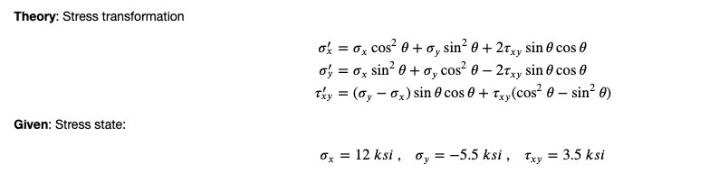
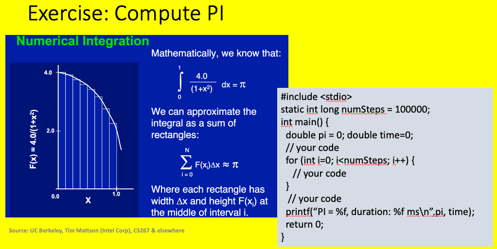

C Variables and Functions¶
Today we have three problems for you to tackle. Two are familiar and you performed them in Python as part of day 1 exercises and assignments. The third pi is new.
Problem 1: Solve the Quadratic¶
We wish to solve the quadratic equations, i.e. given a, x, and c, solve the following equation for x.
The solution from your high school days is the legendary formula:
We want you to write an application developed in C to solve this equation.
To start you off, we have provided a file solveQuadratic.c in /code/c/ExerciseDay1/ which will read 3 numbers from the command line and print out a message to the screen. You are to modify it to print out the solution for x.
Note
When compiling because you will be using functions from the C math library you will need to include the math library when you compile and link your code, i.e.
gcc solveQuadratic.c -lm
The solution solveQuadratic.c can be found on github. The contents of that file is presented here:
1 2 3 4 5 6 7 8 9 10 11 12 13 14 15 16 17 18 19 20 21 22 23 24 25 26 27 28 29 30 31 32 33 34 35 36 37 38 39 40 41 42 43 44 45 46 47 48 49 50 51 52 53 | // program to solve quadratic equation
// ax^2 + bx + c = 0
//
// soln: x = -b/2a +/- sqrt(b^2-4ac)/2a
//
// write a program to take 3 inputs and output the soln
// deal with possible errors in input, i.e. b^2-4ac negative
#include <stdlib.h>
#include <stdio.h>
#include <math.h>
int main(int argc, char **argv) {
if (argc != 4) {
printf("Usage: appName a b c\n");
exit(-1);
}
float a = atof(argv[1]);
float b = atof(argv[2]);
float c = atof(argv[3]);
double b2minus4ac = b*b-4*a*c;
double bDiv2a = -b/(2*a);
if (b2minus4ac > 0.0) {
double other = sqrt(b2minus4ac)/(2*a);
double x1 = bDiv2a - other;
double x2 = bDiv2a + other;
printf("Double Solution x1: %lf x2: %lf\n", x1, x2);
} else if (b2minus4ac == 0.0) {
double x = -b/(2*a);
printf("Single Solution is %lf\n", x);
} else {
double other = sqrt(-b2minus4ac)/(2*a);
double x1 = bDiv2a - other;
double x2 = bDiv2a + other;
printf("Complex Solution x1: %lf + %lfi, x2: %lf + %lfi\n", bDiv2a, other, bDiv2a, -other);
}
return 0;
}
|
Problem 2: Stress Transformations¶
To transform stress to a rotated coordinate system one can use the formula shown in the figure. We would ask you to write code that will take as input 4 values sigmaXX, sigmaYY, tauXY, and theta compute the stress in the transformed coordinate system. We would ask you to perform that transformation computation in a function other than main and to complicate things, but demonstrate you understand passing of arrays, pass the input and output stresses to this new function in fixed length arrays.
Equation for stress transformation¶
Note
If you need something extra work, write to a file the results of this transformation from 0 through 360 degrees in increments you input from the command line.
To send you data to a file named results.out, start the application as follows:
./appName 1.0 100.0 0.01 1 > results.out
The solution transformStress.c can be found on github. The contents of that file is presented here:
1 2 3 4 5 6 7 8 9 10 11 12 13 14 15 16 17 18 19 20 21 22 23 24 25 26 27 28 29 30 31 32 33 34 35 36 37 38 39 40 41 42 43 44 45 46 47 48 49 50 51 52 53 54 55 56 57 58 59 60 61 62 63 64 65 66 67 68 69 70 71 72 73 74 75 76 77 | // program to transform stress:
//
// sigmaX' = sigmaX * cos^2(theta) + sigmaY * sin^2(theta) + 2 * tauXY Sin(theta)Cos(theta)
// sigmaY' = sigmaX * sin^2(theta) + sigmaY * cos^2(theta) - 2 * tauXY Sin(theta)Cos(theta)
// tauXY' = (sigmaY-sigmaX) * sin(theta)cos(theta) + tauXY(cos^2(theta) - sin^2(theta))
//
// write a program to take 4 inputs: sigmaX, sigmaY, tauXY, theta
// output transformed stresses: sigmaX', sigmaY', tauXY'
//
// NOTE: perform the transformation inside a function that cannot be named main
//
// Extend to possibly include all outputs for a Mohr circle, were the theta now provided is a deltaTheta
#include <stdlib.h>
#include <stdio.h>
#include <math.h>
void transformStress(float *stressIN, float theta, float *stressTransformed);
int main(int argc, char **argv) {
// NOTE: if 5 args are provided, the program will output data for a Mohr Circle
if (argc != 5 && argc != 6) {
printf("Usage: appName sigX sigY tauXY theta <anything>\n");
exit(-1);
}
float vectorIN[3], vectorTransformed[3];
vectorIN[0] = atof(argv[1]);
vectorIN[1] = atof(argv[2]);
vectorIN[2] = atof(argv[3]);
float theta = atof(argv[4]);
if (argc == 5) {
// 4 args: Compute single transformed stress for theta provided
transformStress(vectorIN, theta, vectorTransformed);
printf("%f, %f, %f\n", vectorTransformed[0], vectorTransformed[1], vectorTransformed[2]);
} else {
// 5 args provided: compute Mohr circle using deltaTheta
// print current
printf("%f, %f, %f, %f\n", 0.0, vectorIN[0], vectorIN[1], vectorIN[2]);
// compute for all angles until we reach 360 (don't compute for 360)
float currentTheta = theta;
while (currentTheta < 360.) {
transformStress(vectorIN, currentTheta, vectorTransformed);
printf("%f, %f, %f, %f\n", currentTheta, vectorTransformed[0],
vectorTransformed[1], vectorTransformed[2]);
currentTheta += theta;
}
}
return 0;
}
void transformStress(float *stressIN, float theta, float *stressTransformed) {
float sigX = stressIN[0];
float sigY = stressIN[1];
float tauXY = stressIN[2];
// convert theta to radians & compute sin and cos of the angle
float thetaRadians = theta*180.0/M_PI; // M_PI is PI as a double from the math.h file
float cosX = cos(thetaRadians);
float sinX = sin(thetaRadians);
stressTransformed[0] = sigX*cosX*cosX + sigY*sinX*sinX + 2*tauXY * sinX*cosX;
stressTransformed[1] = sigX*sinX*sinX + sigY*cosX*cosX - 2*tauXY * sinX*cosX;
stressTransformed[2] = (sigY-sigX)*sinX*cosX + tauXY * (cosX*cosX - sinX*sinX);
}
|
Problem 3: Compute PI numerically¶
The figure below shows an method to compute pi by numerical integration. We would like you to implement that computation in a C program.
Computation of pi numerically¶
Note
You will be using your solution on Day 4 as part of the parallel exercises.
The solution pi.c can be found on github. The contents of that file is presented here:
1 2 3 4 5 6 7 8 9 10 11 12 13 14 15 16 17 18 19 20 21 22 23 | #include <stdio.h>
#include <time.h>
#include <math.h>
static long int numSteps = 1000000000;
int main() {
// perform calculation
double pi = 0;
double dx = 1./numSteps;
double x = dx*0.50;
for (int i=0; i<numSteps; i++) {
pi += 4./(1.+x*x);
x += dx;
}
pi *= dx;
printf("PI = %16.14f Difference from math.h definition %16.14f \n",pi, pi-M_PI);
return 0;
}
|